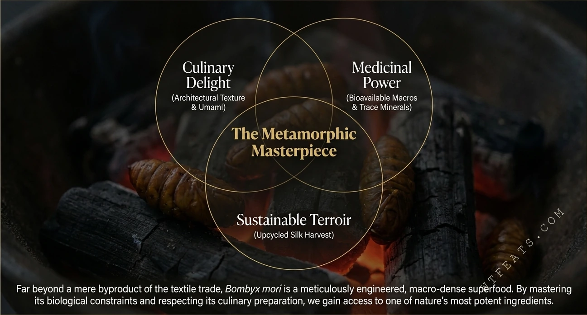
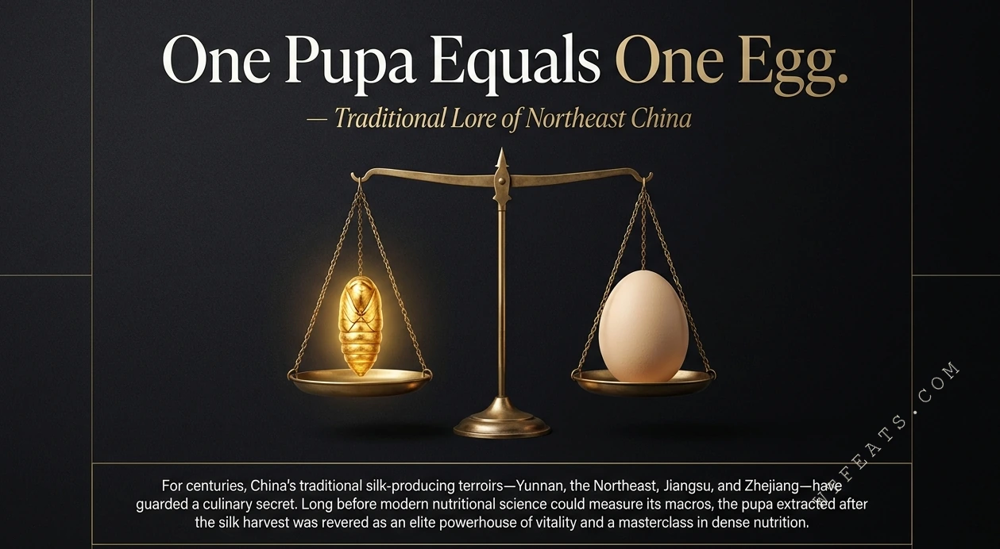
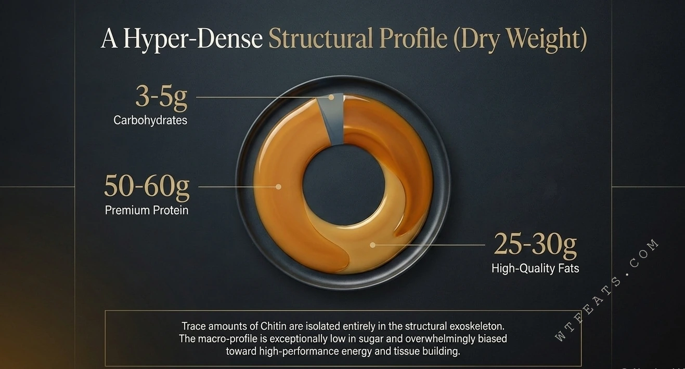

Gastronomic Pleasure
A crisp chitin shell yielding to a rich, umami-dense, melt-in-the-mouth core — textural duality as culinary craft.
Fig. 11 — Epilogue
Far from being a mere byproduct of the textile industry, the domestic silkworm is a precisely "engineered" superfood with extraordinary macronutrient density.
Fig. 11.1 — Where Three Values Converge
By mastering its biological boundaries and respecting its culinary craft, we gain access to one of nature's most potent ingredients. Where gastronomic pleasure, medicinal value, and sustainable terroir intersect lies the metamorphic masterwork.

The Three Pillars
A crisp chitin shell yielding to a rich, umami-dense, melt-in-the-mouth core — textural duality as culinary craft.
Functional lipids, a complete amino acid suite, and a mineral profile that rewrites the hierarchy of beef and eggs.
A harvest rooted in the silk regions of Yunnan, Northeast China, Jiangsu, and Zhejiang — dense nutrition with a light footprint.

Start Here
A centuries-old proverb, the balance experiment, and the golden window of the fourth instar — the silkworm pupa's story begins here.

Visual Dossier
Textural duality dissected, the 50–60g protein density revealed, and four functional benefits of 70.9% unsaturated fatty acids.

Deep Dive
Calcium 76× that of beef, magnesium 4× that of beef — plus the three ironclad chef safety rules.
Filed
Misunderstood Foods · Edible Insects · Sustainable Protein · Functional Nutrition. The silkworm pupa officially joins century egg and stinky tofu as the third entry in the WTFeats Field Guide.